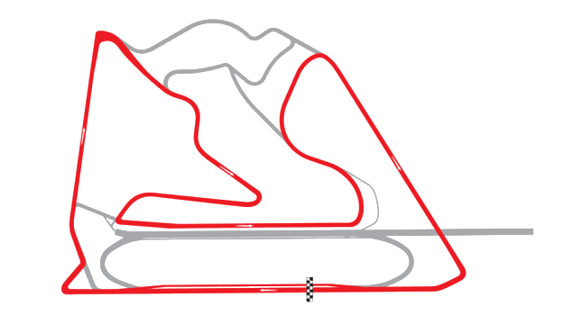

Circuito Internacional de Baréin – Sakhir, Baréin
Longitud: 5.412 km | Vueltas: 57
Características: Circuito moderno con rectas largas y curvas técnicas, ideal para adelantamientos. Se corre de noche.

Longitud: 5.412 km | Vueltas: 57
Características: Circuito moderno con rectas largas y curvas técnicas, ideal para adelantamientos. Se corre de noche.
Longitud: 4.909 km | Vueltas: 63
Características: Trazado histórico con pocas zonas de escape y muchas curvas rápidas. Muy técnico y exigente.
Longitud: 4.675 km | Vueltas: 66
Características: Circuito montañoso con subidas, bajadas y curvas ciegas. Gran desafío para los pilotos.
Longitud: 4.675 km | Vueltas: 66
Sede clásica de test. Bien balanceado, con variedad de curvas y una recta larga.
Longitud: 3.337 km | Vueltas: 78
El más icónico, estrecho y técnico. Casi imposible adelantar, pero muy prestigioso ganar aquí.

Longitud: 6.003 km | Vueltas: 51
Circuito urbano rápido con una recta larguísima y secciones estrechas dentro de la ciudad antigua.

Longitud: 5.842 km | Vueltas: 53
Muy plano, con escapatorias amplias y muchas variantes. Buenas oportunidades de adelantamiento.
Longitud: 4.318 km | Vueltas: 71
Corto pero veloz. Curvas rápidas y frenadas fuertes. Suele tener carreras emocionantes.
Longitud: 5.891 km | Vueltas: 52
El "hogar" de la F1. Curvas de alta velocidad como Maggotts y Becketts lo hacen espectacular.
Longitud: 5.891 km | Vueltas: 52
Revirado y lento, se asemeja a un kartódromo. Difícil adelantar, clave la clasificación.

Longitud: 4.381 km | Vueltas: 70
Largo y técnico. Famoso por Eau Rouge y condiciones climáticas cambiantes.
Longitud: 4.259 km | Vueltas: 72
Circuito antiguo renovado. Curvas peraltadas y trazado angosto, estilo retro.
Longitud: 5.793 km | Vueltas: 53
El “Templo de la Velocidad”. Rectas largas y pocas curvas. Altísima velocidad punta.
Longitud: 5.848 km | Vueltas: 53
Trazado semiurbano con muchas curvas de 90 grados. Técnica pero no muy popular entre pilotos.
Longitud: 5.338 km | Vueltas: 58
Famoso por su curva 8. Fluido y técnico, ofrece buenas carreras.

Longitud: 5.513 km | Vueltas: 56
Moderno y con curvas inspiradas en otros circuitos. Muy completo y entretenido.

Longitud: 4.304 km | Vueltas: 71
A más de 2.000 metros de altitud, lo que afecta aerodinámica. Rectas largas y estadio espectacular.

Longitud: 4.309 km | Vueltas: 71
Corto, pero lleno de historia. Ondulado y con gran ambiente. Clima cambiante.
Longitud: 5.380 km | Vueltas: 57
Normalmente para motos. Curvas rápidas y fluidas. Debutó en F1 en 2021.
Longitud: 6.174 km | Vueltas: 50
Urbano y extremadamente rápido. Curvas ciegas y exigente mentalmente. Debut en 2021.
Longitud: 5.281 km | Vueltas: 58
Final tradicional de temporada. Circuito nocturno con mezcla de zonas técnicas y rectas.